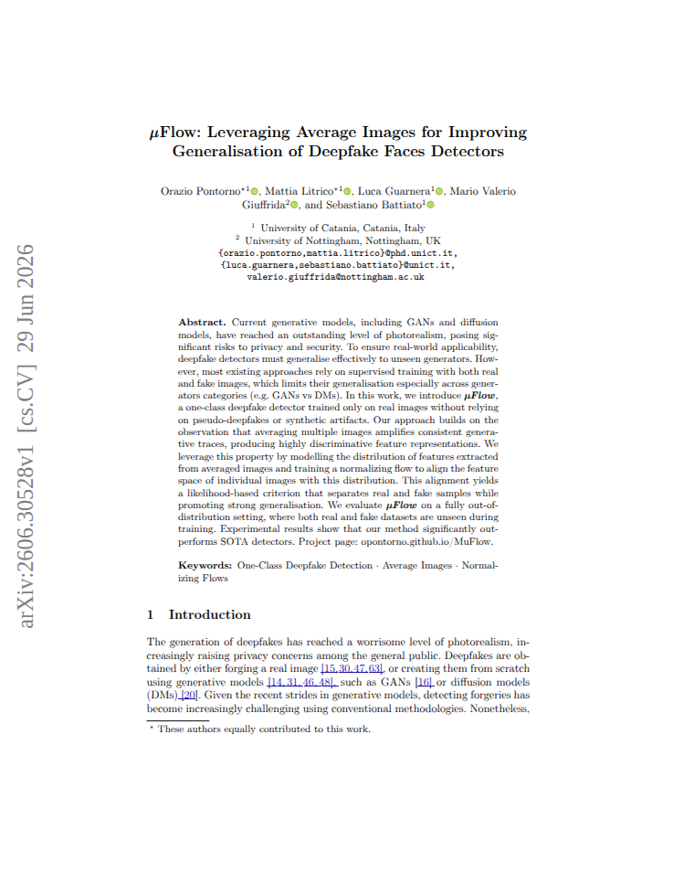

Orazio Pontorno
AI Researcher and Data Scientist with expertise in Deep Learning, Computer Vision, and Mathematical Modelling. Specializing in Generative Models, Synthetic Media Analysis, and Graph-based approaches for complex AI challenges.
Interests
Research Stats
6+
Publications
28+
Citations
3
H-index
19+
Co-authors
Source: Semantic Scholar
Development Stats
12+
Public Repos
21+
Total Stars
22+
Followers
10+
Total Forks
Source: GitHub
Curriculum Vitae
Download CVBiography
Final-year PhD researcher in Artificial Intelligence with a solid theoretical foundation in Applied Mathematics, holding a Master's in Data Science and a Bachelor's in Mathematics. Specializes in theoretical and methodological advancements within Computer Vision, Image Processing, Synthetic Media Forensics, and AIGC Detection. Experienced in conducting cutting-edge scientific research across international academic institutions and corporate R\&D environments.
About Me
Birthday : 10-13-1999
Email : orazio.pontorno@phd.unict.it
City : Catania, Italy
Languages : Italian, English
Interests : Chess, Fitness, Travel
Skills
Digital Skills
Education
11/2023 - today
Ph.D. in Artificial Intelligence
Università Campus Bio-Medico, Rome, Italy
University of Catania, Catania, Italy
10/2021 - 09/2023
Master's degree in Data Science
University of Catania, Catania, Italy
Grade: 110/110 summa cum laude
Thesis: An AI Forensics approach for the recognition of synthetic image-generating architecture based on diffusion models
09/2022 - 11/2022
Postgraduate School Course in AI: Deep Learning, Vision and Language for Industry
Università degli Studi di Modena e Reggio Emilia, Modena, Italy
Final Project: An AI-based system for Traffic lights recognition
09/2018 - 12/2021
Bachelor's degree in Mathematics
University of Catania, Catania, Italy
Grade: 105/110
Thesis: Teoria dei Codici: Codici Lineari
Experience
01/2026 - 06/2026
Visiting Researcher
State University of New York Polytechnic Institute, Utica, NY· Full Time
Deepfake analysis and detection in medical imaging. Medical Image Analysis AIGC Detection Computer Vision Generative Models Image Processing
03/2025 - 12/2025
AI Researcher
Life360 · Full Time
ML models for personalized ad targeting and causal inference in recommendation systems. Causal Inference Similarity Models Databricks Amazon SageMaker AI PySpark
04/2024 - 02/2025
R&D Data Scientist
Fantix Inc. · Contract
Data enrichment models based on graph and hypergraph representations. Graph Neural Networks Hypergraph Models Amazon SageMaker AI PyTorch Deep Learning
04/2023 - 06/2023
Student Research Assistant
iCTLab s.r.l. · Internship
Deep learning models for synthetic media forensics and deepfake detection. Multimedia Deepfake Detection Generative Models Image Processing Deep Learning
02/2023 - 08/2023
Research Assistant
Vicosystems s.r.l. · Scholarship
GAN-based anomaly detection on time-series data for predictive maintenance. Anomaly Detection Time-series Predictive Maintenance GAN-networks Deep Learning
Licenses and Certifications
Research Activities
Overview of my research contributions including publications, workshop organization, and reviewing activities in the field of Artificial Intelligence and Deep Learning.
Research Metrics
6+
Publications
28+
Total Citations
3
H-index
13+
Most Cited Paper
19+
Co-authors
0
Influential Citations
3
Years Active
4.7
Avg Citations/Paper
Source: Semantic Scholar
Publications

µFlow: Leveraging Average Images for Improving Generalisation of Deepfake Faces Detectors Conference 0 citations

DeepFeatureX-SN: Generalization of deepfake detection via contrastive learning Journal 0 citations

WILD: a new in-the-Wild Image Linkage Dataset for synthetic image attribution Conference 8 citations

DeepFeatureX Net: Deep Features eXtractors based Network for discriminating synthetic from real images Conference 7 citations

On the Exploitation of DCT-Traces in the Generative-AI Domain Conference 13 citations
Workshop & Challenge Organization
(DFF '25) 1st Deepfake Forensics Workshop: Detection, Attribution, Recognition, and Adversarial Challenges in the Era of AI-Generated Media
This workshop aims to bring together researchers and practitioners from diverse fields, including computer vision, multimedia forensics and adversarial machine learning, to explore emerging challenges and solutions in deepfake detection, attribution, recognition and counter-forensic strategies.
Adversarial Attacks on Deepfake Detectors: A Challenge in the Era of AI-Generated Media (AADD-2025)
The goal of this challenge is to investigate adversarial vulnerabilities of deepfake detection models by generating adversarial perturbed deepfake images that evade state-of-the-art classifiers while maintaining high visual similarity to the original deepfake content.
Reviewing Activity
Conference Reviewer
Projects & Development
A showcase of my open-source contributions, research implementations, and development projects.
GitHub Metrics
12
Repositories
21
Total Stars
10
Total Forks
22
Followers
Source: GitHub
Quick Insights
Most Starred
-
Primary Language
-
Top Topic
-